Character Rendering and Text Display
The process of properly preparing characters for display is called character rendering. When QuickDraw draws a character, string, or line of text, it takes the stored character codes you supply it and processes them if necessary to take into account line direction, contextual substitution, or character reordering. It uses the rules of the font script (the script system of the current font of the active graphics port) to make these calculations. QuickDraw then gets the glyphs for the resulting characters from the Font Manager, and draws the glyphs in order on the screen, starting at the current pen location.The 1-byte simple script systems and all 2-byte script systems currently have no individual character-rendering specifications; QuickDraw's built-in ability to draw characters sequentially in a given font, style, and size is sufficient.
- IMPORTANT
- A fundamental assumption of the Macintosh script management system is that contextual analysis, character reordering, and the formation of ligatures should occur during the display of text, not its storage. That way the stored version of text can be much simpler; it contains only the basic characters of its writing system. Searching and other text-manipulation tasks are much more straightforward that way. It is the Macintosh script management system that has the job of handling differences between storage order and display order, and differences between stored codes and displayed glyphs.
The 1-byte complex script systems carry character-rendering information in line-layout tables in their encoding/rendering (
'itl5') resources. WorldScript I performs the rendering based on specifications in those tables.The section "Features of the World's Writing Systems" beginning on page 1-21 shows examples from writing systems that require the kinds of rendering abilities provided by the Macintosh script management system. Your application should not have to explicitly perform any of these tasks; you merely store character codes, and the script management system renders those characters properly whenever you need to display them.
Storage Order and Display Order
QuickDraw draws glyphs and lines of text from left to right only. This left-to-right orientation of QuickDraw is fundamental, and applies whether or not the text being drawn is meant to be read left-to-right or right-to-left. Each character is drawn with its origin (usually its left edge) placed at the current pen location, and after it is drawn QuickDraw moves the pen location rightward by the width of the glyph. Likewise, when QuickDraw draws a string of text, it keeps advancing the location as it draws, so that the pen location ends up at the right end of the string.Display order is this left-to-right order in which QuickDraw draws glyphs on a display device. For example, QuickDraw draws a string of Hebrew text in reverse order from the way the string is read: the glyph for the last ( = leftmost) character in the string is drawn first, and the glyph for the first ( = rightmost) character in the string is drawn last. Figure 1-40 is an example showing a line of mixed Arabic and Roman text. The glyphs are drawn as shown, from left to right in the sequence labeled Display order, even though the primary line direction is right-to-left.
Figure 1-40 Storage order and display order
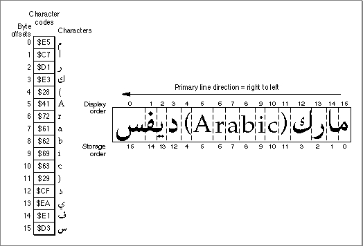
Storage order is the sequence of character codes in memory. The Macintosh script management system assumes that your application stores characters in the order in which they would be typed in--that is, with the first character code in a string at a lower address than subsequent character codes in that string. Storage order is different from display order for text with a right-to-left line direction.In Figure 1-40, for example, the line of numbers labeled Storage order shows the byte offset in the buffer of the character for each glyph. Note that the glyphs for the Hebrew characters are drawn in reverse sequence from the order in which they are stored, whereas the glyphs for the Roman characters are drawn in the same sequence as their storage order.
If your application stores its text in the expected storage order, the script management system properly orders all characters within each style run that you draw.
Storage order can differ from display order not only in the sequence of individual characters within a run of text, but also in the order in which entire runs of text are drawn on the screen. See Figure 1-41 on page 1-67 for an example. If multiple scripts with different line directions occur on a single line, determining the order in which to draw the individual runs can be complex. The Macintosh script management system helps you with that determination; see the discussion of the
GetFormatOrderprocedure in the chapter "QuickDraw Text" in this book.Line Direction and Alignment
Writing systems exist with several different line directions, as shown in Figure 1-14 on page 1-24. The Macintosh script management system supports two of them: left-to-right (used for Roman and most other writing systems), and right-to-left (used for Arabic and Hebrew). As noted earlier in this chapter, Arabic and Hebrew systems are considered bidirectional rather than purely right-to-left because numbers and commonly intermixed foreign words are written from left to right. And although Japanese and Chinese are traditionally written vertically, the Japanese and Chinese script systems currently support only a left-to-right line direction.The Macintosh script management system supports multiscript text, including text with mixed directions, in a single line. The layout, measurement, and drawing routines can help you correctly render text--even justifed text--from multiple script systems.
Primary Line Direction
When text with different line directions is mixed on a single line, the primary line direction is the principal, controlling direction for display of that text. The concept of primary line direction is important because it affects the order in which text elements are drawn. For example, suppose a block of Hebrew text follows (in storage order) a block of Roman text. If the primary line direction is left-to-right--equivalent to saying that the Hebrew text is embedded within a line of Roman text--the Hebrew text is drawn after and to the right of the Roman text. If the primary line direction is right-to-left--equivalent to saying that the Roman text is embedded within a line of Hebrew text--the Roman text is drawn after and to the right of the Hebrew text. Figure 1-41 illustrates the concept.Figure 1-41 How primary line direction affects display order
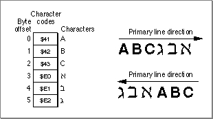
Your application controls the primary line direction of its text by specifying it in parameters to certain text-layout calls such as the QuickDrawGetFormatOrderprocedure. You can set your primary line direction independently of any system settings, but TextEdit and many text-processing applications tie their primary line direction to the current value of the system direction.The system direction is a global setting, used by all parts of system software to control the alignment of text elements in dialog boxes, menus, and so on. TextEdit sets the primary line direction of its text to the system direction. Some script-aware routines assume that the primary line direction for the text they manipulate is equal to the system direction; see, for example, the description of the
CharToPixelfunction in the chapter "QuickDraw Text" in this book.System direction is determined by the value of the low-memory system global variable
SysDirection. At startup,SysDirectionis initialized to the line direction specified by the system's international configuration ('itlc') resource. That value is commonly localized to correspond to the primary line direction of the system script, but if a bidirectional script system is enabled the user can control the system direction from the Text control panel; see "User Control of Script Settings" beginning on page 1-107.Your application (and other applications) can also control the system direction with Script Manager routines. Do not simply assume a value for system direction.
The right-to-left primary line direction of bidirectional script systems has several further implications for program design. In working with bidirectional text, remember these points:
- Characters are read from right to left. Numerals are read from left to right. A word processor must therefore implement two sets of tabs and two ruler directions.
- Mathematical expressions are read from left to right in Hebrew and from right to left in Arabic. If in Hebrew one writes "6 + 4 = 10", in Arabic the same expression in the same order would be written "10 = 4 + 6".
- The concepts of leading edge and trailing edge of a glyph are important for mouse-down event testing, caret positioning, and highlighting. In left-to-right text, a glyph's leading edge is its left edge; in right-to-left text, a glyph's leading edge is its right edge. See "Caret Handling" beginning on page 1-74.
- Some punctuation marks and numerals from the Standard Roman character set are duplicated at different locations in bidirectional character sets in order to account for this. For example, the exclamation point (!) is at $21 in the Standard Roman character set, but Hebrew and Arabic add a second, right-to-left version of it, at $A1.
- Despite the fact that a single style run in a bidirectional script system can contain two directions of text, your application can treat it as a unit. See the note on bidirectional style runs on page 1-71.
Alignment
Alignment is the horizontal placement of lines of text with respect to the left and right edges of the text area or page. Text is typically left-aligned, right-aligned, centered, or justified--aligned to both the left and right margins. See Figure 1-15 on page 1-25.A script system's default text alignment usually follows its line direction. The system global variable
SysDirection, which controls line direction, also controls the default alignment for text and other items in dialog boxes, alerts, and menus. For example, in Arabic system software (and in applications localized to the Arabic script system) menu items are right-aligned, and radio buttons and checkboxes are modified so that the boxes or buttons themselves are on the right. The user controls the system alignment by controlling the system direction with the Text control panel. See "User Control of Script Settings" beginning on page 1-107.TextEdit uses the value of
SysDirection, to set the default alignment for text in its windows.You should anticipate that right alignment might occur in your application's text elements. Be sure to allow for it:
Figure 1-42 Dialog items truncated at dialog-box boundary
- Do not assume that, once you have measured the length of a line of text, you can always place it at the left margin. For right-aligned text, you need to indent the pen location from the left margin by an appropriate amount so that the right end of the text line falls on the right margin.
- Do not allow a text item in a dialog box to extend to the right of the dialog-box boundary; the right edge of a line of text in that item will be truncated if text is right-aligned. See Figure 1-42 for an illustration of this.
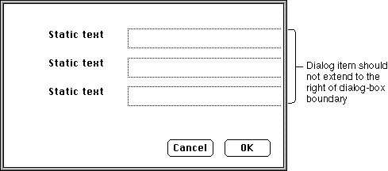
If you are specifically formatting right-aligned text in a bidirectional script system, remember these additional alignment issues:
- When creating a column of checkboxes or radio buttons, make the text boxes all the same length. This ensures that when the line direction and alignment are reversed, the checkboxes or radio buttons remain correctly aligned.
- Text is typically right-aligned. It breaks near the left margin and continues at the right margin of the following line. However, the "last" character on a line is not always the leftmost; see, for example, Figure 1-27 on page 1-31.
- Headers, footers, and footnotes are typically right-aligned.
- In a table or list, the first column is the rightmost.
- Line indentation is measured from the right margin.
- Odd pages are on the left in a book, and even pages are on the right. The inside front cover is on the right when a book is opened, and page 1 is on the left.
Justification
Justified text, which is aligned to both the left and right margins of the text area, is a special form of alignment that poses particular challenges to multiple-language formatting. The Macintosh script management system provides an entire set of routines for measuring, laying out, and drawing lines of justified text. See, for example, the descriptions of thePortionLineandDrawJustifiedroutines, and the discussions of measuring and drawing lines of justified text in the chapter "QuickDraw Text" in this book.Style Runs, Font Runs, Script Runs, Direction Runs
When QuickDraw draws a character or string of text, it examines the current graphics port record to determine how the text should be drawn. The font (and therefore the script system), the point size, and the style of the text are all determined by fields in the current graphics port.This feature of QuickDraw has several consequences. First, it means that you must be sure to set the graphics port fields properly before calling QuickDraw. Second, it means that each call to QuickDraw must be restricted to a run of text that has uniform values for all those fields.
This finest division of the runs of text in your document is called a style run. A style run comprises the set of contiguous characters that all share the same font, size, and style characteristics. Because they share the same font, they naturally share the same script system. The style run is the most important organizational unit for script-aware text handling, and your application should always maintain style-run information for all its text. For many script-aware calls, you first set up the graphics port record appropriately and then make the call, passing it a single style run of text (or even less than a single style run, if the style run spans more than one line of text).
A larger division than style run is the font run; it consists of those characters that share the same font (and therefore the same script), but do not all share the same size or style attributes. You need not reset the
txFontfield of the graphics port between calls that involve text within a single font run.The next larger division is the script run; it consists of all contiguous characters that belong to a given script system, regardless of their individual fonts. Within a script run, all the text's formatting and text-manipulation specifications are constant; there is no need to load different resources or validate the existence of another script system between calls involving a single script run. If your application does not support multiple script systems, all of your text is a single script run.
The largest division is the direction run. A direction run consists of all contiguous characters with the same line direction, regardless of what script system they belong to. (However, see the note on bidirectional style runs page 1-71.) Within a direction run, the display order of characters and style runs has a very simple relation to their storage order. If all of your text consists of a single direction run, your text-layout tasks are simplified.
Figure 1-43 shows a line of text and its separation into style runs, font runs, script runs, and direction runs.
Figure 1-43 Style runs, font runs, script runs, and direction runs in text
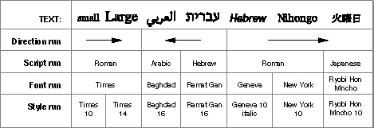
Runs of Roman characters in text of a non-Roman script system are not necessarily considered separate style runs, and may be displayed (as Roman characters) in the non-Roman font of that script system. For greater formatting control, however, you may want to explicitly separate out those Roman characters into style runs of their own. You can use a Text Utilities routine to do so.
- Bidirectional style runs
- Bidirectional script systems have a unique concept of a style run. Numerals and Roman characters in a bidirectional style run have a different direction from the rest of the native text, but your application needn't consider them as separate style runs. The script management system handles all the special formatting, highlighting, and character location for you in these cases, so you can treat such a mixed-direction sequence just as you would any other single style run.

Text Layout
Laying out lines of text--calculating how many characters fit on a line, determining the order of drawing of all the elements, performing all contextual formatting, and drawing the text--is a standard task in word processing. It can be a challenging task in a single language, but it is especially difficult to write a text-layout routine that is general enough to work with text in any script system. Even more complex is the laying out of text from several script systems in a single line. Add to that the complications of trying to draw justified lines of multiscript text, and the task can appear daunting.The Macintosh script management system includes several groups of routines that ease the task by helping you write very generalized text-layout code that can handle multiscript lines of text, and can even justify those lines appropriately for the script systems involved. Routines from the Script Manager, the Text Utilities, and QuickDraw cooperate to analyze, arrange, format, measure, and draw the text.
There are two main principles that control how text layout occurs on the Macintosh:
Therefore, if a syle run extends beyond the boundaries of the current line, you call the routine for only that portion of the style run that is on the line. The part of a style run that exists on a single line is called a text segment in the chapter "QuickDraw Text" in this book.
- There is no system support for layout of more than a single line at a time. You are responsible for knowing where in memory your line starts and where on the screen to start drawing it.
- (Nearly) all text-layout routines operate on a single style run at a time. Therefore, to handle text with potentially multiple styles or scripts on a single line, you may need to call a routine repeatedly, once for each style run on the line.
In general, text layout involves taking the following steps, in order, for each line you intend to draw:
You can also use QuickDraw and Text Utilities calls to draw explicitly scaled multiscript text, in which the character are enlarged, shrunk, or distorted from their normal shapes; and you can even draw justified, scaled, multiscript text. For more information on text measurement and drawing, see the chapter "QuickDraw Text" in this book. For more information on line breaking, see the chapter "Text Utilities" in this book.
- Starting with the buffer location of the first character on the line, and knowing the width of your display line in pixels, calculate the byte offset of the character at which to break the line. There are several ways to do this, using both QuickDraw and Text Utilities routines. The routines give proper results for any script system.
- Determine the order in which to draw the individual style runs on the line, using a QuickDraw routine. If the line contains mixed-directional text, the left-to-right order in which you draw style runs may not be the same as the order in which they occur in memory. See, for example, Figure 1-41 on page 1-67.
If you are drawing justified text, take these additional steps:
- Eliminate trailing spaces at the end of the rightmost or leftmost (depending on the primary line direction) style run on your display line, so your justified text will line up properly. You can use a QuickDraw routine for this purpose (remember that a space character may not have the ASCII value $20 in a non-Roman script system).
- Calculate the slop value, the extra amount of space that needs to be distributed throughout your line of text. Do that by measuring the total pixel width of all the style runs on the line and subtracting that from the display line width.
- Calculate how to distribute that slop value among the style runs on your line, using a QuickDraw routine.
- Position the QuickDraw pen both vertically and horizontally. The horizontal position must be at the left end of the text to be drawn on the line, regardless of the primary line direction. The vertical position is your responsibility; if you are drawing multiple lines in sequence, you can use QuickDraw or Font Manager routines to obtain font-height information to help you position the pen.
- Draw the text, a style run at a time, using QuickDraw calls. For justified text, pass the amount of slop you calculated for each style run when you call the drawing routine for that run.
Remember these points when laying out and drawing lines of text:
If you are measuring the pixel width of a line of text before drawing it, keep these cautions in mind:
- There are tables available that help you measure text before drawing it. The global width table is a table constructed in memory every time
FMSwapFontis called; it can be used to calculate the pixel width of each glyph in a font, and it is helpful in determining line lengths. Each font family resource may have an optional width table with normalized glyph widths. Bitmapped fonts have tables that give the actual integer widths for their glyphs. For more information on these tables and on theFMSwapFontcall, see the chapter "Font Manager" in this book.- Don't break text into arbitrary chunks before formatting it for display: the second byte of a 2-byte character can be lost, or improper contextual formatting can result. If you need to truncate the displayed text at a location that is not a style run boundary or a valid line break or word boundary, use the QuickDraw clipping facility rather than truncating the string.
- Roman characters within style runs of a non-Roman font may display better if converted to the Roman script system and formatted as Roman text. You can use the Text Utilities to locate sequences of such characters.
- Do not assume that a glyph for a given character code always has the same width. With certain scripts, using the Font Manager global width tables may give inaccurate results. The QuickDraw text-measuring routines return correct results for all script systems.
- Do not assume that specifying a fixed-width font in a graphics port always produces monospaced text. For example, the printed versions of some glyphs in some fixed-width fonts (such as "®" in Courier) have widths different from other glyphs in the font. Furthermore, when the Script Manager font force flag is set, the user might, for example, insert a wide Japanese character within a line of Monaco text. See the description of the font force flag in the chapter "Script Manager" in this book.
- Some characters, such as diacritical marks, may have zero width. A zero-width character should never be divided from the previous character in the text when you partition text. When truncating a string to fit into a horizontal space, the correct algorithm is to truncate from the end of the string toward the beginning, one character at a time, until the total width is small enough. This prevents cutting text before a zero-width character. You can also call Text Utilities functions to perform the truncation correctly.
- Do not set the
chExtrafield of the graphics port to a nonzero value with text containing connected glyphs or text that may include zero-width characters. Diacritical marks are placed incorrectly in relation to their base characters, and connected glyphs have white space inserted improperly, like this:
chExtra= 0chExtranonzerographics/NewArtNeeded.jpg graphics/NewArtNeeded.jpg graphics/NewArtNeeded.jpg graphics/NewArtNeeded.jpg Caret Handling
By standard word-processing convention, the selection range is the sequence of zero or more characters--contiguous in memory--where the next editing operation is to occur. A selection range of zero characters is called an insertion point.Highlighting a selection range and marking the insertion point both involve converting offsets of characters in a text buffer into pixel positions on a display device. In multiscript text, expecially text that has mixed line directions and contextual formatting, this can be a complex task.
The Macintosh script management system provides a routine that helps you draw carets properly for text in any combination of script systems. The QuickDraw function
CharToPixelreturns the onscreen pixel position corresponding to a given offset in your text buffer. The function returns the horizontal offset (in pixels) from the left margin of the text you pass it to the proper caret position corresponding to the character at the specified byte offset in your text buffer.This section discusses the conventions underlying the relationship of text offset to caret position. For more information on conversion of text offset to screen position, see the description of the
- Caret and cursor
- By convention in this book, the caret is defined as the blinking bar that marks the insertion point in text. The cursor, on the other hand, is the arrow, I-beam, spinning disk, or other small icon that marks screen position and moves with the mouse.
CharToPixelfunction in the chapter "QuickDraw Text" in this book.The Caret
A caret position is a location on the screen that corresponds to an insertion point in memory. It lets the user know where in the text file the next insertion (or deletion ) will occur. A caret position is always between glyphs on the screen, usually on the leading edge of one glyph and the trailing edge of another. The leading edge of a glyph is the edge that is encountered first when reading text of that glyph's script system; the trailing edge is opposite from the leading edge. In left-to-right text, a glyph's leading edge is its left edge; in right-to-left text, a glyph's leading edge is its right edge.In most situations for most text applications, the caret position is on the leading edge of the glyph corresponding to the character at the insertion point in memory; see Figure 1-44. When a new character is inserted, it displaces the character at the insertion point, shifting it and all subsequent characters in the buffer forward by one character position. (That shift may be one or two bytes, depending on the size of the inserted character.)
Figure 1-44 Caret position and insertion point
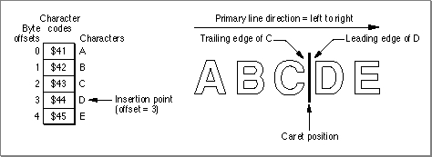
The caret position is unambiguous in text with a single line direction. In such a case, the caret position is on the trailing and leading edges of characters that are contiguous in the text buffer; it thus corresponds directly to a single offset in the buffer. This is not always the case in mixed-directional text, as described next.Caret Positions at Direction Boundaries
In determining caret position, an ambiguous case occurs at direction boundaries because the byte offset in memory can map to two different glyph positions on the screen--one for text in each line direction. In Figure 1-45, for example, the insertion point is at byte offset 4 in the buffer. If the next character to be inserted is Arabic, the caret should be drawn at caret position 4 on the screen; if the next character is English, the caret should be drawn at caret position 12.Figure 1-45 Caret positions at direction bondaries
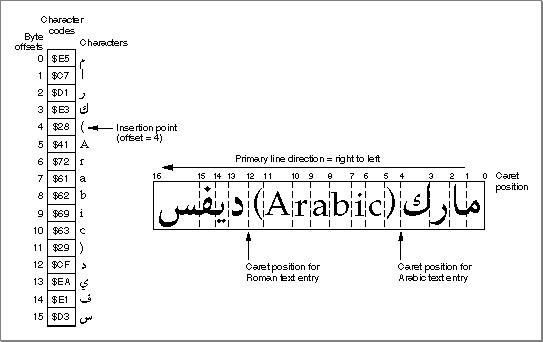
The Macintosh script management system codifies this relationship between text offset and caret position as follows:Two common approaches for drawing the caret at direction boundaries involve the use of a dual caret and a single caret. A dual caret consists of two lines, a high caret and a low caret, each measuring half the text height; see Figure 1-46. The high caret is displayed at the primary caret position for the insertion point; the low caret is displayed at the secondary caret position for that insertion point. Which position is primary, and which is secondary, depends on the primary line direction:
- For any given offset in memory, there are two potential caret positions:
- the leading edge of the glyph corresponding to the character at that offset
- the trailing edge of the glyph corresponding to the previous (in memory) character
(The first and last characters of a text segment are special cases; see the discussion of the
CharToPixelfunction in the chapter "QuickDraw Text" in this book.)- In unidirectional text, the two caret positions coincide: the leading edge of the glyph for one character is at the same location as the trailing edge of the glyph for the previous character. In Figure 1-44, the offset of 3 yields caret positions on the leading edge of "D" and the trailing edge of "C", which are the same unambiguous location.
- At a boundary between text of opposite directions, the two caret positions do not coincide. Thus, in Figure 1-45, for an offset of 4 there are two caret positions: 12, on the leading edge of "("; and 4, on the trailing edge of ",,". Likewise, an offset of 12 yields two caret positions (also 12 and 4, but on the edges of two different glyphs).
At an ambiguous character offset, the current line direction (the presumed direction of the next character to be inserted) determines which caret position is the correct one:
- If the current direction equals the direction of the character at that offset, the caret position is the leading edge of that character's glyph. In Figure 1-45, if Roman text is to be inserted at offset 4 (occupied by a Roman character), the caret position is on the leading edge of that character's glyph ("(")--that is, at caret position 12.
- If the current direction equals the direction of the previous (in memory) character, the screen position is on the trailing edge of the glyph corresponding to that previous (in memory) character. In Figure 1-45, if Arabic text is to be inserted at offset 4, the caret position is on the trailing edge of the glyph of the character at offset 3 (",,")--that is, at caret position 4.
Figure 1-46 Dual caret at direction boundaries in mixed-directional text
- The primary caret position is the screen location associated with the glyph that has the same direction as the primary line direction. If the current line direction corresponds to the primary line direction, inserted text will appear at the primary caret position. A primary caret is a caret drawn at the primary caret position.
- The secondary caret position is the screen location associated with the glyph that has a different direction from the primary line direction. If the current line direction is opposite to the primary line direction, inserted text will appear at the secondary caret position. In Figure 1-46, the display of the Roman keyboard icon shows that the current line direction is not the same as the primary line direction, so the next character inserted will appear at the secondary caret position. A secondary caret is a caret drawn at the secondary caret position.
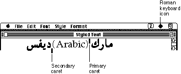
A single caret (or moving caret) is simpler than a dual caret; see Figure 1-47. It is a single, full-length caret that appears at the screen location where the next glyph will appear. At direction boundaries, its position depends on the keyboard script. At a direction boundary, the caret appears at the primary caret position if the current line direction corresponds to the primary line direction; it appears at the secondary caret position if the current line direction is opposite to the primary line direction. The moving caret is also called a jumping caret because its position "jumps" between the primary and secondary caret positions as the user switches the keyboard script between the two text directions represented.Figure 1-47 Single carets at direction boundaries in mixed-directional text
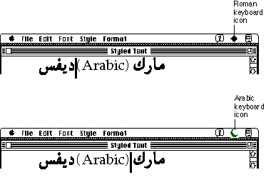
The script management system permits the user to select a preference between dual carets and a single (moving) caret; your text application should support both. TextEdit employs both types of carets; see the chapter "TextEdit" in this book.Caret Movement With Arrow Keys
Most text applications allow the user to move the caret through displayed text with the arrow keys. In general, using the Right or Left Arrow key should move the caret uniformly right or left, regardless of the line direction of the text in which the caret appears. To do this means that your application needs to take the current line direction into consideration, rather than simply advancing the insertion point through the text buffer in response to presses of, say, the Right Arrow.When the caret moves through a direction boundary (or any style run boundary) in response to a series of arrow keypresses, you need to set the keyboard script (and graphics port settings) to match the characteristics of the text that the caret is in. By convention, you should change the keyboard script and port characteristics after the caret has passed the boundary, not when it first reaches it.
For a discussion of how TextEdit handles the complications that occur at direction boundaries and within runs of bidirectional text, see the chapter "TextEdit" in this book.
Highlighting
When displaying a selection range, an application typically marks it by highlighting, drawing the glyphs in inverse video or with a colored or outlined background. As part of its text-display tasks, your application is responsible for knowing what the selection range is and highlighting it properly--as well as for making the necessary changes in memory that result from any cutting, pasting, or editing operations involving the selection range.
- Discontinuous selection
- A selection range as defined in this book always consists of characters contiguous in memory. Some word processors allow for discontinuous selection, in which the characters that constitute the selection range are not necessarily contiguous in memory. You can think of discontinuous selection as the simultaneous existence of several selection ranges of the type described here. Discontinuous selection is not discussed further in this book. In particular, keep in mind that the discontinuous highlighting shown in this section is not an example of discontinuous selection; all selection ranges shown here are single, contiguous ranges in memory.
Unidirectional Text
In text with a single line direction, the selection range always appears on screen as a continuous range of highlighted glyphs; see Figure 1-48.Figure 1-48 Highlighting a selection range in unidirectional text
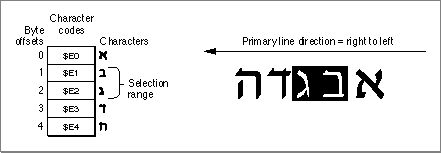
The Macintosh script management system measures the limits of highlighting rectangles in terms of caret position. Thus, in Figure 1-48, in which the selection range consists of the characters at offsets 1 and 2 in memory, the ends of the highlighting rectangle correspond to caret positions for offsets 1 and 3. It's equivalent to saying that the highlighting extends from the leading edge of the glyph for the character at offset 1 to the leading edge of the glyph for the character at offset 3.
- Highlighting for word selection
- If your application supports word selection by double-clicking, it involves three steps. First, use a QuickDraw call to locate the offset in memory corresponding to the double-click. Second, use a Text Utilities call to locate the offsets of the word boundaries on either side of the double-click. Third, use QuickDraw calls to determine the boundaries of the rectangle to highlight.
Mixed-Directional Text
If the displayed text has mixed direction runs, the selection range may appear as discontinuous highlighted text. This is because the characters that make up the selection range are always contiguous in memory, but characters that are contiguous in memory may not be contiguous on screen.Figure 1-49 is an example of text whose selection range consists of a contiguous sequence of characters in memory, whereas the highlighted glyphs are displayed discontinuously.
Figure 1-49 Highlighting a selection range in mixed-directional text
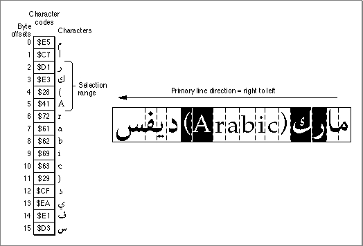
In describing the boundaries of the highlighting rectangles in terms of caret position, note that for Figure 1-49 it is not possible to simply say that the highlighting extends from the caret position of offset 2 to the caret position of offset 6. Using the definitions of caret position given earlier, however, it is possible to define it as two separate rectangles, one extending from offset 4 to offset 2, and another extending from offset 12 to offset 6 (assuming for the ambiguous offsets--4 and 12--that the current text direction equals the primary line direction).The QuickDraw function
HiliteTextmakes those kinds of calculations and is especially useful for determining the correct caret positions when highlighting a selection range in mixed-directional text. See the discussion ofHiliteTextin the chapter "QuickDraw Text" in this book for more details.Converting Screen Position to Text Offset
Caret handling and highlighting, as just discussed, require conversion from text offset to screen position. But that is only half the picture; it is just as necessary to be able to convert from screen position to text offset. For example, if the user clicks the cursor within your displayed text, you need to be able to determine the offset in your text buffer equivalent to that mouse-down event. You can then use that information to set the insertion point or selection range.The script management system does most of this work for you. It provides routines that convert a screen position to the byte offset of a character code in memory (and vice versa); those routines function correctly with multiscript text, even text that has been rendered with ligatures and contextual forms.
Determining the character associated with a screen position requires first defining the caret position associated with a given screen position. Once that is done, the previously defined relationship between caret position and text offset can be used to find the character.
Figure 1-50 shows the cursor positioned within a line of text at the moment of a mouse click. A mouse-down event can occur anywhere within the area of a glyph, but the caret position that is to be derived from that event must be an infinitesimally thin line that falls between two glyphs.
Figure 1-50 Interpreting caret position from a mouse-down event
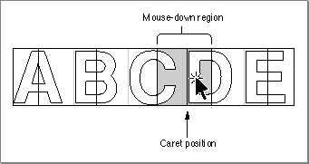
A line of displayed glyphs is divided by the script management system into a series of mouse-down regions. A mouse-down region is the screen area within which any mouse click will yield the same caret position. For example, a mouse click that occurs anywhere between the leading edge of a glyph and the center of that glyph results in a caret position at the leading edge of that glyph. For unidirectional text, mouse-down regions extend from the center of one glyph to the center of the next glyph (except at the ends of a line), as Figure 1-50 shows. A mouse click anywhere within the region results in a caret position between the two glyphs.At line ends, and at the boundaries between text of different line directions, mouse-down regions are smaller and interpreting them is more complex. As Figure 1-51 shows, the mouse-down regions at direction boundaries extend only from the leading or trailing edges of the bounding glyphs to their centers. Note that the shaded part of Figure 1-50 is a single mouse-down region, whereas each of the shaded parts of Figure 1-51 is two mouse-down regions.
Figure 1-51 Mouse-down regions and caret positions in mixed-directional text
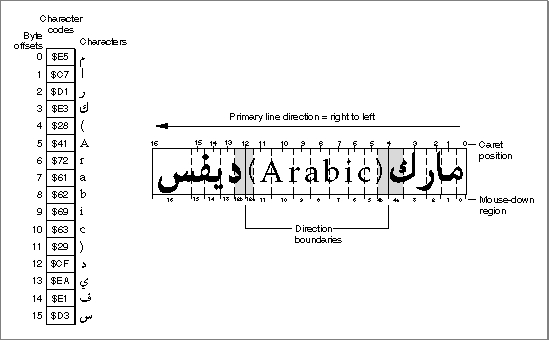
How do mouse-down regions relate to text offset? Referring to Figure 1-51, and remembering that the primary line direction is right-to-left, consider the two mouse-down regions 4a and 12a:Thus mouse clicks in two widely separated areas of the screen can lead to an identical caret display and to a single insertion point in the text buffer. One, however permits insertion of Roman text, and the other Arabic text, and the insertions occur at different screen locations.
- A mouse click within region 4a is associated with the trailing edge of the Arabic character ",,". In response, your application might make the keyboard script Arabic, draw a primary caret (or single caret) at caret position 4, and place the insertion point at offset 4 in the buffer, to insert Arabic text following ",,". (If you are drawing a dual caret, the secondary caret should be at caret position 12, which also corresponds to an insertion point at offset 4 in the buffer.)
- A mouse click within region 12a is associated with the leading edge of the Roman character "(". In response, your application might make the keyboard script Roman, draw a secondary caret (or single caret) at caret position 12, and place the insertion point at offset 4 in the buffer, to insert Roman text preceding "(". (If you are drawing a dual caret, the primary caret should be at caret position 4, which also corresponds to an insertion point at offset 4 in the buffer.)
Mouse clicks in regions 4b and 12b in Figure 1-51 would lead to just the opposite situation: a primary caret at caret position 12, a secondary caret at caret position 4, and an insertion point at offset 12 in the text buffer. Either Roman text would be inserted after the Roman character ")", or Arabic text would be inserted before the Arabic character "�".
The QuickDraw function
PixelToCharhelps you make these calculations; it returns the byte offset in your text buffer corresponding to the character associated with a particular distance (in pixels) from the left margin of the displayed text. It even handles the special cases of pixel locations outside (to the left or right of) the margins of the displayed text. For more information on conversion of screen position to text offset, see the description of thePixelToCharfunction in the chapter "QuickDraw Text" in this book.Printing
At the application level, printing on the Macintosh computer is not fundamentally different from drawing to the screen. A printer is considered a display device, and your application prints by creating a printing graphics port (a graphics port with a few extra fields for printing), setting the port's fields, and drawing in the port with calls to QuickDraw. General procedures for printing are described in the Printing Manager chapter of Inside Macintosh: Imaging. However, printing text, and especially contextual text, can pose extra challenges.A very common complication results from the difference in resolution and pixel size between screen and printer. QuickDraw measurements are theoretically in terms of points, which are nominally equivalent to screen pixels at normal resolution. High-resolution printers have very much smaller pixel sizes, although printer drivers are expected to take this into account so that the same QuickDraw calls will produce text lines of the same width on the screen and on a printer. Nevertheless, this higher resolution, and the fact that printers can use different fonts from those used for screen display, can result in some loss of fidelity from the screen to the printed page:
Other complications result from the fact that high-resolution printers use deferred printing, in which the document to be printed is first converted into a spool file in picture-file format, and it is the picture file rather than the original document that is printed. This can result in loss of certain display features that picture files do not support, such as the following:
- QuickDraw places text glyphs on the screen at whole screen-pixel intervals, whereas a high-resolution printer has much smaller pixels and can therefore provide much finer placement on the printed page. If your application specifies the use of fractional glyph widths, the spacing of the text on the screen can be awkward but it more accurately reflects the optimum layout of the printed text. Alternatively, specifying integer glyph widths gives more pleasing screen results because the characters are drawn with regular pixel spacing, but the results on the page can be typographically unacceptable. See the discussions of fractional glyph width in the chapters "QuickDraw Text" and "Font Manager" in this book for more information.
- Printer drivers attempt to reproduce faithfully the text formatting as drawn by QuickDraw on the screen, including keeping the same intended character spacing, line breaks, and page breaks. However, because printers can have resident fonts that are different from the fonts that QuickDraw uses, because the drivers may handle text layout somewhat differently than QuickDraw, and because font metrics do not always scale linearly, fidelity may not always be achieved. Typically, identical line breaks and page breaks can be maintained, but character spacing can be noticeably different.
Some of the most difficult problems result from the fact that printer drivers replace the QuickDraw bottleneck routines
- The
grayishTextOrtransfer mode cannot be used for printing. See the discussion of transfer modes in the chapter "QuickDraw Text" in this book.- You cannot pass
DrawText(orStdText) more than 255 bytes of text at a time when printing.DrawTextandStdTextare documented in the chapter "QuickDraw Text" in this book.StdTextandStdTxMeas(by changing thegrafProcsfield of the printing graphics port) to allow printing to function with QuickDraw calls, whereas certain script systems use different modifications (trap patches) to those same routines to perform contextual formatting. Printer drivers that print from spool files can then interact with QuickDraw in several ways that may cause complications:To avoid these problems, printer drivers should call the Script Manager Print Action routine whenever they change the
- Some drivers call QuickDraw twice: once to create a spool file for printing, and once again to unwind the spooling. If the text is contextually transformed during spooling, the transformation must not be repeated during unwinding.
- Some drivers may not call QuickDraw at all, meaning that necessary contextual transformations might not be made at all.
- Some drivers may call QuickDraw re-entrantly, such as when displaying a status message during printing.
grafProcsfield. For more information on the Print Action routine, see the discussion on writing device drivers in Inside Macintosh: Devices.To accommodate the special contextual formatting needs of 1-byte complex script systems, WorldScript I patches the QuickDraw routines
StdText,StdTxMeas,MeasureText, and the Font Manager procedureFontMetrics. There are Script Manager routines that allow you to modify or replace those patches if your text has additional needs not met by the WorldScript I routines. To allow for the extra complications that may occur during printing, WorldScript I allows you to define separate entry points or even separate routines for printing as opposed to screen display. See the discussion on replacing a script system's default routines in the chapter "Script Manager" in this book, and the description of WorldScript I in the appendix "Built-in Script Support."